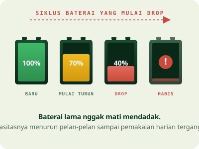
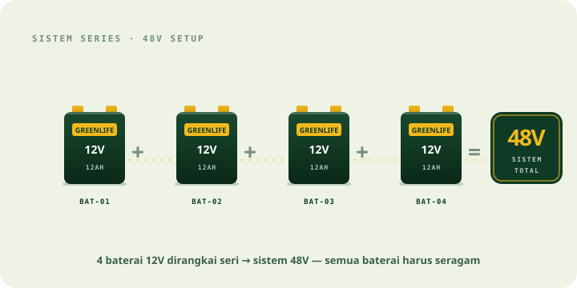
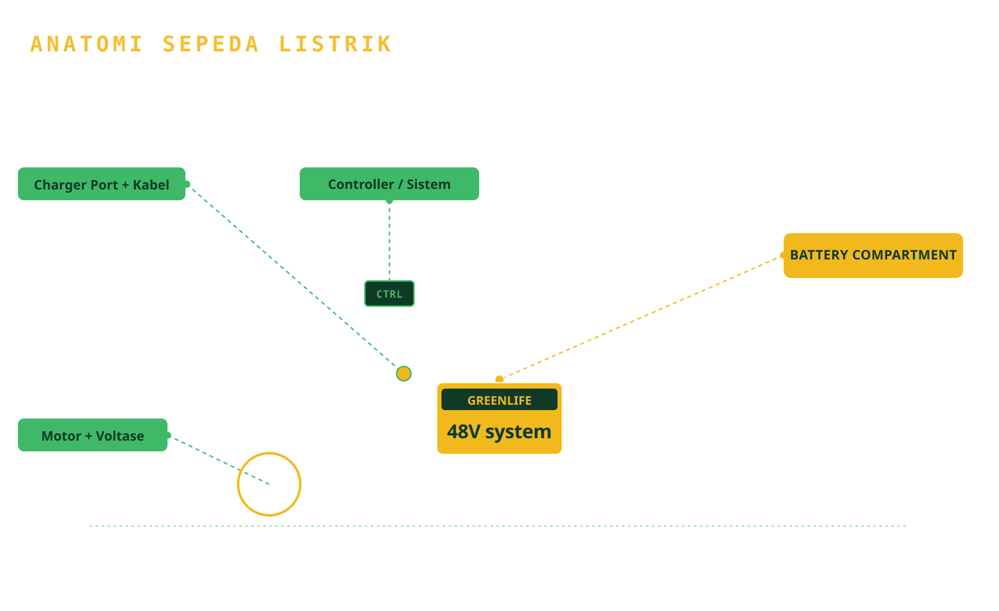

Tersedia pilihan baterai Greenlife 12V untuk sepeda listrik, mulai dari 12AH hingga 20AH, dengan beberapa pilihan bobot dan kapasitas sesuai kebutuhan pemakaian harian.
Cocok untuk pengguna yang ingin mengganti baterai lama, menambah performa pemakaian, atau mencari baterai pengganti yang lebih sesuai dengan tipe sepeda listriknya.
Baterai adalah salah satu komponen paling penting di sepeda listrik. Kalau kondisinya mulai melemah, pemakaian harian jadi terasa kurang nyaman.
Baterai yang mulai drop nggak langsung mati total. Biasanya muncul lewat gejala kecil yang menumpuk pelan-pelan — sampai sepeda benar-benar terasa loyo dan pemakaian harian mulai terganggu.

Greenlife menyediakan pilihan baterai 12V dengan kapasitas dan bobot yang berbeda, sehingga pengguna bisa menyesuaikan pilihan baterai berdasarkan tipe sepeda listrik, kebutuhan jarak tempuh, dan pemakaian harian.
Setiap sepeda listrik biasanya menggunakan beberapa unit baterai 12V yang dirangkai sesuai sistem voltase sepeda — misalnya 48V menggunakan 4 baterai 12V. Karena itu, pemilihan baterai tidak boleh asal cocok bentuknya saja. Ukuran, kapasitas, dan sistem kelistrikan sepeda semuanya perlu dicek supaya baterai baru benar-benar pas dan aman.

Empat varian, semua 12V — beda di bobot dan kapasitas. Pilih yang paling pas dengan sepeda listrikmu.
Pilihan baterai 12V 12AH dengan bobot lebih ringan, cocok untuk kebutuhan penggantian baterai sepeda listrik dengan ruang baterai yang sesuai.
Baterai 12V 12AH dengan bobot lebih berat dibanding varian 3kg. Cocok untuk pengguna yang ingin pilihan 12AH dengan konstruksi yang terasa lebih solid.
Baterai 12V 12AH dengan bobot lebih tinggi di kelas 12AH. Diposisikan sebagai opsi 12AH yang lebih premium dan solid untuk pengguna yang mencari konstruksi lebih mantap.
Baterai 12V 20AH dengan kapasitas lebih besar dibanding varian 12AH. Cocok untuk pengguna yang membutuhkan daya tahan pemakaian lebih panjang — selama kompatibel dengan sepeda listriknya.
Ringkasan singkat dari empat varian di atas. Bandingkan kapasitas, bobot, dan cocoknya untuk apa.
| Produk | Voltase | Kapasitas | Bobot | Cocok Untuk |
|---|---|---|---|---|
| Greenlife 3kg | 12V | 12AH | 3kg | Pemakaian ringan dan harian dekat |
| Greenlife 3,4kg | 12V | 12AH | 3,4kg | Pemakaian harian standar |
| Greenlife 3,7kg | 12V | 12AH | 3,7kg | Opsi 12AH dengan bobot lebih besar |
| Greenlife 5,2kg | 12V | 20AH | 5,2kg | Pemakaian lebih intens dan kapasitas lebih besar |
Secara sederhana, AH atau ampere-hour menunjukkan kapasitas baterai. Semakin besar kapasitasnya, semakin besar potensi daya simpan. Tapi baterai yang lebih besar tidak otomatis cocok untuk semua sepeda listrik — ukuran fisik, ruang baterai, jumlah baterai, voltase sistem, kabel, dan charger tetap perlu diperiksa dulu.
Sepeda listrik biasanya menggunakan rangkaian beberapa baterai 12V. Misalnya, sepeda listrik 48V umumnya memakai 4 baterai 12V. Salah pilih = risiko overheat, charger nggak match, atau baterai nggak muat di ruangnya.

Bukan cuma jual — kami bantu kamu pastikan baterainya cocok, aman, dan awet dipakai harian.
Kamu bisa bertanya dulu agar tidak salah pilih tipe baterai — terutama kalau ragu soal kompatibilitas.
Tersedia beberapa pilihan bobot dan kapasitas — 12AH untuk kebutuhan standar, 20AH untuk yang lebih intens.
Greenlife bisa jadi pilihan tepat untuk mengganti baterai sepeda listrik yang mulai drop atau melemah.
Kalau ada kendala setelah pemakaian, ada tim VOXA yang bisa dihubungi — bukan sekadar beli lalu ditinggal.
Tersedia pengiriman ke berbagai area sesuai ketentuan ekspedisi barang baterai/lithium.
Feedback ringkas dari pengguna sepeda listrik yang mengganti baterai lama dengan Greenlife 12V.
Baterai lama saya udah nggak kuat buat pulang-pergi. Setelah ganti Greenlife 12AH, jarak tempuh balik normal — nggak takut lagi mati di jalan.
Awalnya bingung pilih varian yang mana. Setelah konsultasi dulu, tim VOXA bantu pilih yang cocok buat sepeda listrik anak saya — proses ganti gampang, langsung nyala.
Sebelumnya pakai 12AH, saya sering ngerasa kurang buat aktivitas seharian. Upgrade ke Greenlife 20AH bikin sekali cas cukup lama — enak buat pemakaian yang lebih intens.
Agar baterai lebih awet, cara pemakaian dan charging juga perlu diperhatikan. Ini beberapa hal sederhana yang bisa langsung kamu terapkan.
Belum tentu. Harus dicek dulu voltase sistem sepeda, jumlah baterai yang digunakan, ukuran fisik, tipe soket, dan kapasitas baterai lama. Kalau ragu, konsultasi dulu sebelum beli.
Umumnya sepeda listrik 48V menggunakan 4 baterai 12V yang dirangkai. Tapi tetap perlu dicek berdasarkan tipe dan brand sepedanya — beberapa model punya konfigurasi berbeda.
20AH memiliki kapasitas lebih besar dibanding 12AH — artinya potensi daya simpan yang lebih besar dan pemakaian lebih panjang. Namun, ukuran fisik dan kompatibilitas dengan sistem sepeda tetap harus diperiksa dulu.
Bisa — hanya jika ruang baterai, charger, sistem kelistrikan, dan spesifikasi sepeda mendukung. Jangan dipaksakan kalau salah satunya nggak cocok, karena bisa berdampak ke sistem sepedamu.
Untuk pembelian satuan, silakan konsultasikan dulu via WhatsApp — kami bantu sesuaikan dengan kebutuhan rangkaian baterai sepeda listrikmu.
Ada garansi sesuai ketentuan pembelian produk. Detailnya bisa ditanyakan saat konsultasi sebelum order.
Cek kebutuhan baterai sepeda listrik kamu sekarang. Tim VOXA bisa bantu arahkan pilihan Greenlife yang sesuai, mulai dari 12AH hingga 20AH.